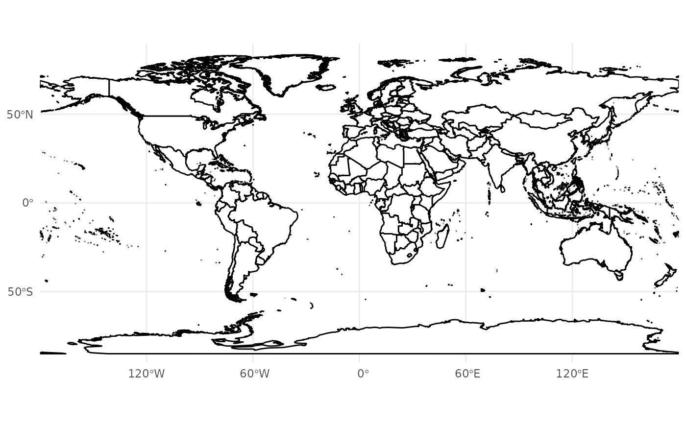
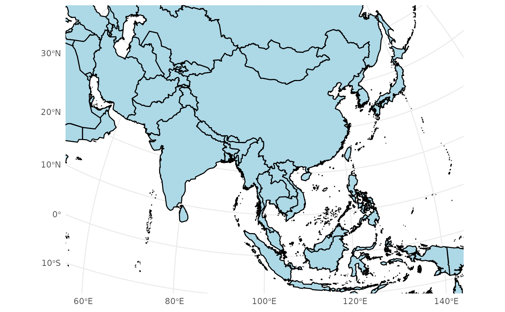

Coordinate System with Transformed Limits for Custom Projections
Source:R/coord_proj.R
coord_proj.Rdcoord_proj is a wrapper around ggplot2::coord_sf().
It simplifies specifying map limits (xlim, ylim) in longitude and latitude (WGS84 CRS)
and automatically transforms them into the specified CRS for accurate projections.
This function extends the functionality of coord_sf() to seamlessly handle user-specified
geographic boundaries in any projection, ensuring accurate mapping.
Usage
coord_proj(
crs = NULL,
xlim = NULL,
ylim = NULL,
expand = TRUE,
default_crs = "EPSG:4326",
...
)Arguments
- crs
A character string specifying the coordinate reference system (CRS) for the projection (e.g.,
"EPSG:4326"or custom projections like"+proj=merc").- xlim
Longitude range (in degrees) to display, as a numeric vector of length 2.
- ylim
Latitude range (in degrees) to display, as a numeric vector of length 2.
- expand
Logical, whether to expand the plot limits. Default is
TRUE.- default_crs
A character string specifying the CRS of the input
xlimandylim. Default is"EPSG:4326".- ...
Additional arguments passed to
ggplot2::coord_sf().
Examples
# World map with default projection and limits
ggplot() +
geom_world() +
coord_proj(
crs = "+proj=longlat +datum=WGS84",
xlim = c(-180, 180),
ylim = c(-90, 90),
expand=FALSE
) +
theme_minimal()
#> Linking to GEOS 3.10.2, GDAL 3.4.1, PROJ 8.2.1; sf_use_s2() is TRUE

# Focused view with Azimuthal Equidistant projection
china_proj <- "+proj=aeqd +lat_0=35 +lon_0=105 +ellps=WGS84 +units=m +no_defs"
ggplot() +
geom_world(fill = "lightblue") +
coord_proj(
crs = china_proj,
xlim = c(60, 140),
ylim = c(-10, 50)
) +
theme_minimal()

# Display a small map of the South China Sea Islands with a custom projection
ggplot() +
geom_boundary_cn() +
theme_bw() +
coord_proj(
crs = china_proj,
expand = FALSE,
xlim = c(105, 123),
ylim = c(2, 23)
)